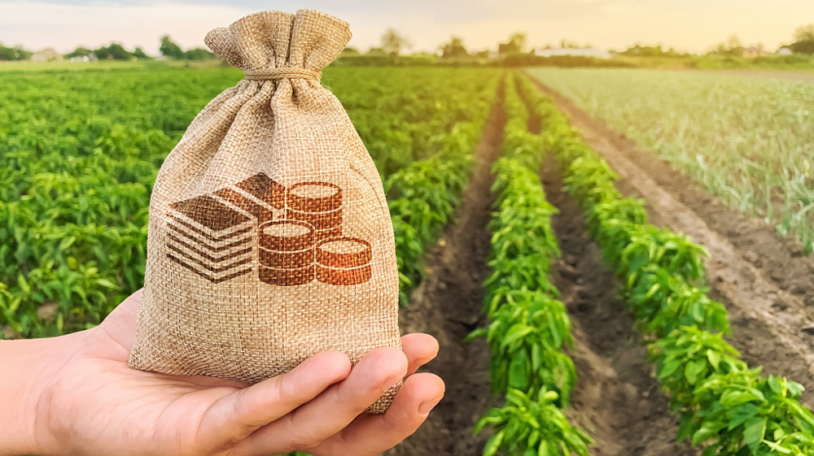

Investissez dans le futur de l’agriculture mondiale
Découvrez les tendances, les hotspots et les opportunités d’investissement par région.
Voir les cartes interactivesDans un monde en constante mutation, où les crises politiques, économiques et climatiques redéfinissent les marchés, l’agriculture émerge comme un secteur stratégique pour des investissements durables et rentables. AreaINVEST Analytics vous permet d’anticiper les tendances mondiales et de détecter les hotspots agricoles avant vos concurrents.

🌎 Amérique Latine
Le soja domine ! Les fuits prennent une place de plus en plus importante.
🌍 Afrique
Café & canne à sucre en fort développement.
🌏 Asie
Diversification vers fruits, l'huile de palme et autres cultures spécialisées.
600+
Deals analysés
60+
Pays couverts
15+
Cultures stratégiques